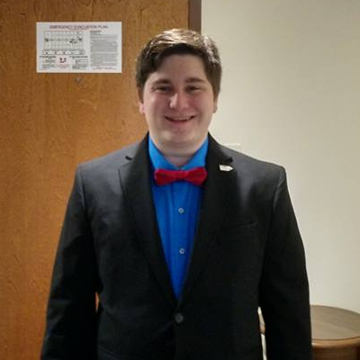
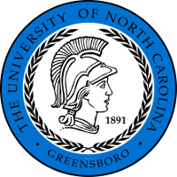

DIRECTOR of COMMUNICATIONS
 Elijah J Mears “Do not pity the dead, Harry. Pity the living and above all, those who live without love.” — Albus DumbledoreElijah Mears is a fourth year student at UNCG majoring in Classical Studies with a minor in Archaeology. His favorite Democrats are Alma Adams, Bernie Sanders, and Al Franken. His plans for the future include graduate school and eventual pursuit of a PhD. He is very excited to be the Director of Communications for this year. He can be contacted at ejmears@uncg.edu.

The UNCG College Democrats is an organization of politically engaged, progressive college students. Join us to help actively promote progressive thought and action on campus, in the community, and throughout the region.
The UNCG College Democrats is an organization of politically engaged, progressive college students. Join us to help actively promote progressive thought and action on campus, in the community, and throughout the region.
Can't get enough of the UNCG College Dems?
Like us on Facebook!
Like us on Facebook!